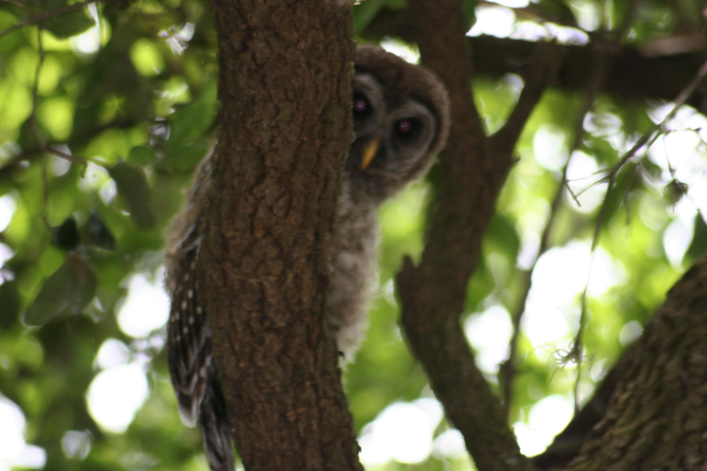

A captive eagle at the Big Cypress Swamp
A hawk in the wild near Lettuce Lake
Mom and Daughter in the wild south of Ruskin

A juvenile male barred owl in the wild

The Barred Owls's call is two single Hoo's followed by a long Ha Hoo, so that the HOO HOO HA HOO sounds like Who cooks for you.
Florida has many birds of prey, they include eagles, hawks, owls, ospreys, vultures, kites, falcons and others. Birds of prey are distinguished by their hooked bill and sharp talons (claws). They capture, kill and eat other animals. Thus, they are "raptors" a word that comes from the latin, meaning "to seize and carry away". Most birds of prey will nest anywhere they have a desired food supply. For example, the Osprey prefers fish, and will nest near a water source.
A captive eagle at the Big Cypress Swamp
A hawk in the wild near Lettuce Lake
Mom and Daughter in the wild south of Ruskin
A juvenile male barred owl in the wild